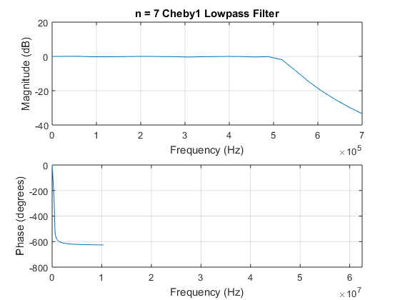
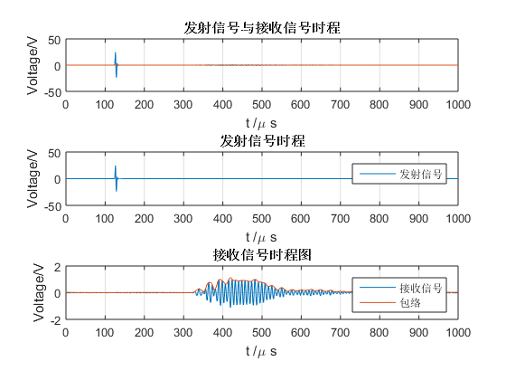
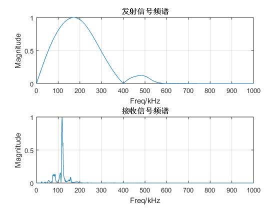
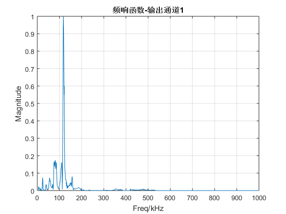
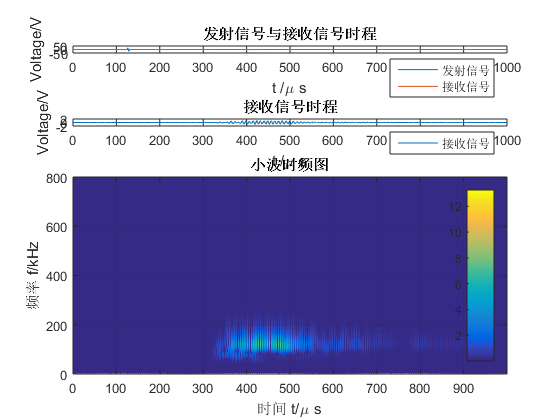

Contents
% 题目：标准化导波信号处理程序 % 功能： % csv信号读取 % 通道数量设置 % 低通滤波去噪 % Hilbert变换 % 频谱分析 % 小波分析 % 程序： % tools -- 信号处理与绘图通用工具箱 % guw -- 导波信号处理专用工具箱 % 作者：马骋 % 时间：2016.12.30
测试
clc,clear,close all s = guw(); s.myfilter(); % 滤波器 s.myHilbert(); % Hilbert变换 s.freqAnalysis(); % 傅立叶变换及频谱分析 s.timePlot(); % 时域绘图 s.freqPlot(); % 频域绘图 s.mycwt(); % 小波分析
接收信号峰值为：
1.1291
Elapsed time is 1.187897 seconds.
    